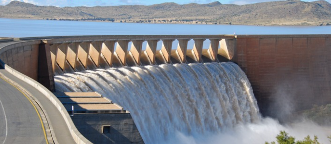
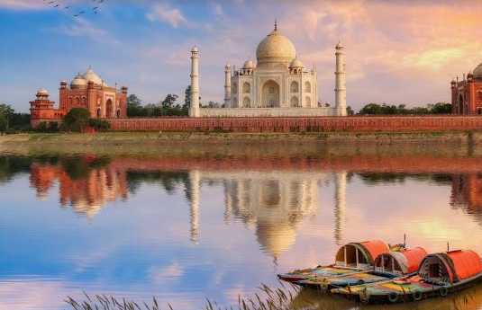
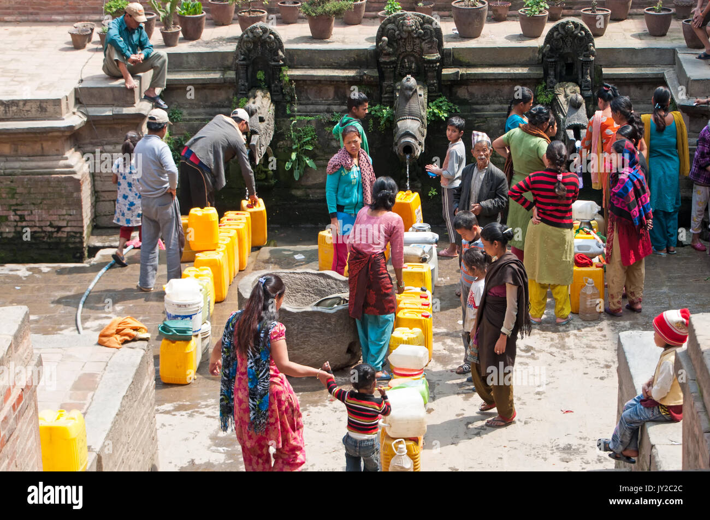
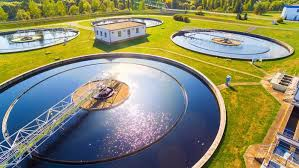

What's Going on Around The World
-
Colorado River Challenges
Stakeholders are grappling with water allocation as the Colorado River faces declining levels. At a recent conference, Upper and Lower Basin representatives debated climate change impacts and potential water rights adjustments to address shortages -
California's Water Supply Concerns
California is preparing for another potentially dry year in 2025. State officials are implementing strategic plans to mitigate water shortages, with a focus on efficient groundwater management and conservation practices -
Shrinking Caucasus Glaciers
A new report highlights the alarming rate of glacial shrinkage in the Caucasus region due to climate change. This situation threatens local water resources, with cascading effects on agriculture and drinking water supplies -
Sinking Land in California’s Central Valley
Research reveals that excessive groundwater extraction is causing parts of California’s Central Valley to sink by an inch annually. This exacerbates risks to infrastructure and long-term water availability -
UN-Water Initiatives
Global organizations are emphasizing integrated approaches to water management, including transboundary cooperation and climate-resilient sanitation systems. These measures aim to support the Sustainable Development Goals, particularly ensuring access to clean water and sanitation

India's News
-
India Leads Global Water Management Efforts
President Droupadi Murmu highlighted India's strides in sustainable water resource management, emphasizing its role in leading global initiatives. Efforts include partnerships and innovations to mitigate water scarcity and improve usage efficiency -
India Water Week 2024 Highlights Solutions for Water Security
The India Water Week 2024 focused on addressing the country's severe water crisis caused by over-reliance on monsoons and groundwater overuse. Experts discussed innovations like the Water Productivity Atlas to improve agricultural water efficiency and encouraged community engagement in water conservation efforts -
Groundwater Management Challenges
Reports from the Central Ground Water Board show that 14% of groundwater assessment units in India are over-exploited. Initiatives like the Atal Bhujal Yojana aim to enhance community involvement and implement sustainable water practices -
Community Participation as a Key to Sustainable Water Use
Initiatives in states like Rajasthan and Madhya Pradesh involve training "Pani Mitras" (water friends) to lead local water management and conservation programs, showcasing the importance of grassroots involvement

Campaigns Around
-
Catch the Rain Campaign 2024
Organized under the Jal Shakti Abhiyan, this campaign focuses on the theme "Nari Shakti se Jal Shakti", emphasizing the role of women in water conservation. Key activities include: Rainwater harvesting and water conservation. Geo-tagging and inventory creation of water bodies. De-silting and cleaning water bodies. Revitalizing abandoned borewells for groundwater recharge. Snow harvesting in hilly areas like Ladakh and rejuvenating small rivers. Special awareness programs and afforestation efforts are central to the campaign -
Jal Jeevan Mission
Aims to provide functional tap water connections to every rural household by 2024. Focuses on sustainable water use through groundwater recharge and community participation -
Mission Amrit Sarovar
Launched to develop and rejuvenate 75 water bodies in each district of the country as part of the 75th Independence celebrations (Azadi Ka Amrit Mahotsav). Encourages local community participation to enhance water storage capacities -
Namami Gange Program
Focuses on the rejuvenation of the Ganga River and its tributaries through pollution abatement, afforestation, and conservation activities

Innovative Technologies
-
Desalination Plants:
Advances in converting seawater to drinkable water. Smart Irrigation Systems:
IoT-enabled systems that optimize water use in agriculture.Artificial Intelligence in Water Monitoring:
AI and sensors for real-time water quality and usage analysis.>Water Recycling Innovations:
Technologies for recycling wastewater for industrial and agricultural use.Rainwater Harvesting Technologies:
Modern systems for efficient storage and usage of rainwater.